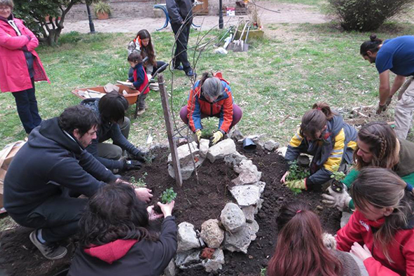

Reforestación Urbana
Descripción: Nuestro programa de Reforestación Urbana busca recuperar espacios verdes y mejorar la calidad ambiental de las ciudades mediante la plantación de árboles nativos. Trabajamos junto a vecinos, escuelas y organizaciones para generar entornos más saludables, sostenibles y conscientes del cuidado del planeta.
Dirigido a: Vecinos, estudiantes, organizaciones y cualquier persona interesada en el cuidado ambiental.
Cómo participar: Podés sumarte como voluntario en nuestras jornadas mensuales o colaborar con donaciones de plantas y herramientas.
Contactanos para participar
Reciclaje Comunitario
Descripción: Impulsamos iniciativas de reciclaje y separación de residuos para reducir el impacto ambiental en barrios y comunidades. A través de talleres, campañas y puntos de recolección, promovemos hábitos responsables y una cultura de consumo más sustentable.
Dirigido a: Familias, instituciones educativas, comercios y comunidades barriales.
Cómo participar: Podés asistir a talleres, sumarte como voluntario o acercar materiales reciclables a nuestros puntos de recolección.
Contactanos para más información
Educación Ambiental
Descripción: Brindamos talleres, charlas y actividades educativas orientadas a fomentar la conciencia ecológica y el compromiso con el medio ambiente. Nuestro objetivo es inspirar a las nuevas generaciones a construir un futuro más verde y sostenible.
Dirigido a: Estudiantes, docentes y público en general.
Cómo participar: Las instituciones pueden solicitar talleres y cualquier persona puede sumarse como voluntario educativo.
Contactanos para coordinar actividades


